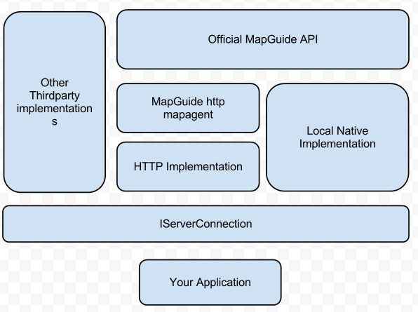

Core Concepts
.. todo:: Still has references to old SDK package
Connections
Overview
Connections are the primary entry point into the functionality offered by the Maestro API. It abstracts away the various methods of interacting with a MapGuide Server into a single unified interface

Known Implementations
There are 3 known implementations of the IServerConnection interface:
Maestro.Http: A HTTP implementation (that communicates with the http mapagent)Maestro.LocalNative: A Local Native implementation (that wraps the official MapGuide API)Maestro.Local: A Local implementation (that wraps the mg-desktop API)
Service Interfaces
A connection is represented by the IServerConnection interface. Creating such connections is done via the ConnectionProviderRegistry
class. This class uses the ConnectionProviders.xml file to resolve and load the matching implementation
Additional implementations can be registered in the ConnectionProviders.xml file
Note
Starting with the 6.0m8 release, the Maestro.Http provider is built into the Maestro API itself. The ConnectionProviders.xml
file is not required if you are only using this connection provider.
The LocalNative implementation source code is included with this SDK, but requires the official
MapGuide API binaries to be also added to your application's directory. As a result this
provider is disabled in the ConnectionProviders.xml file by default. The SDK includes a tool
to help you build this LocalNative provider.
The Local implementation is not included with the SDK. The windows version of Maestro includes this implementation and you can copy the required files from your Maestro installation should you choose to use this implementation.
All examples outlined in this guide assume the use of the HTTP implementation (Maestro.Http)
Resource Objects
Overview
Unlike the official MapGuide API, all resources in the Maestro API are strongly-typed objects and not blobs of arbitrary XML content that needs to be manually processed and manipulated by your application.
All XML resource elements are represented as classes. These classes are automatically generated
from the respective XSD used to validate this resource content. Because a resource can have many
different schema versions, these classes implement a set of common interfaces that reside under the
OSGeo.MapGuide.ObjectModels namespace.
This has 2 benefits:
- It prevents collision of the autogenerated classes across different versions. The generated classes are partitioned under internal version-specific namespaces
- By working against the resource interfaces, your code can work with any supported schema version of a given resource. In addition, adding support for newer schema revisions requires no changes on your side
When working with the Maestro API, always write code against the resource interfaces. Despite being public types and included in the Maestro API assemblies, never write code against the autogenerated classes because multiple versions of them exist. It is for this reason that the autogenerated classes are not included in this API documentation.
Resource Interface Versions
Each schema revision introduces new elements, which require new resource interfaces in the Maestro API that map to these new elements. In such cases, we adopt the approach of COM interfaces and create a new interface that extends the old one and incorporates the methods and properties to handle the new elements. The new interface is suffixed with a number that increases with each new schema revision
For example, the IWebLayout interface represents the Web Layout resource (version 1.0.0). The
1.1.0 schema introduces a new PingServer element (to prevent viewer session expiry). To tap into this newly exposed element
provided by this schema, a IWebLayout2 interface included, which extends the original IWebLayout interface and includes
the new EnablePingServer property. All other resource interfaces follow the same pattern of design.
Of course, due to the large number of schema revisions made since the very first release of MapGuide Open Source, it is a bit difficult to keep track of all the relevant schema revisions and the resource interfaces that are affected. The following table shows which resource schema versions a newer resource interface is applicable to:
| Resource Type | Interfaces introduced for this version (also applicable for versions after it) |
|---|---|
| Layer Definition (v1.1.0) | IVectorScaleRange2, ICompositeTypeStyle, ICompositeRule,IStroke2, ElevationTypeType, IElevationSettings, ICompositeSymbolization, IParameterOverride, IParameterOverrideCollection |
| Layer Definition (v1.2.0) | ISymbolInstance2, IParameterOverride2, IThemeLabel,UsageContextType, GeometryContextType |
| Layer Definition (v1.3.0) | ICompositeTypeStyle2, IAreaVectorStyle2, ILineVectorStyle2,IPointVectorStyle2 |
| Layer Definition (v2.4.0) | ISubLayerDefinition2 |
| Map Definition (v2.3.0) | IMapDefinition2 |
| Map Definition (v3.0.0) | IMapDefinition3 |
| Web Layout (v1.1.0) | IWebLayout2 |
| Symbol Definition (v1.1.0) | ISymbolInstance, ITextGraphic2, DataType2 |
| Symbol Definition (v2.4.0) | IPathGraphic2 |
To determine whether a given interface is accessible, you can either check the ResourceVersion and refer to this
table to see if these interfaces can be casted from their older versions. Or you can utilise language features
such as C#'s as keyword to cast objects to specific interfaces. If the casted object is not null, then that
interface is supported.
If you are using C# 7.0 or higher language features, you can take advantage of pattern matching to achieve the same effect
The Runtime Map
Overview
The RuntimeMap represents the state of the map that a user is currently looking at in the viewer. It contains all the relevant information about the current map:
- The current view center and scale
- The list of RuntimeMapLayer instances that belong to this map
- The list of RuntimeMapGroup instances that belong to this map
- The current extents of the map
- The display width/height/dpi of the map
To obtain a reference to a runtime map, you will have to create one (via IMappingService.CreateMap) or open an existing
one (via IMappingService.OpenMap). Note that when opening an existing runtime map, you need to supply the resource id
of the runtime map state
If given a map name and session id, the runtime map state resource id is usually of the form:
Session:session-id//mapName.Map
Most of this runtime map state can be manipulated through the APIs provided by the Maestro API. When manipulating the state of the runtime map (which also includes modifications to layers and groups that belong to it), you must remember to call Save() on the map to persist your modifications.
Compatibility
The RuntimeMap operates on an encoded binary blob on the MapGuide Server that represents the internal state of the runtime map. New versions of MapGuide may introduce new states that may break compatibility with the RuntimeMap class. As such, usage of the RuntimeMap in the Maestro API is restricted to the following versions of MapGuide (includes point releases and service packs):
- MapGuide Open Source 1.2 and newer
- Autodesk MapGuide Enterprise / Infrastructure Map Serve 2008 and newer
If you are not using a version of MapGuide that is on this list, there is no guarantee the RuntimeMap will work as expected